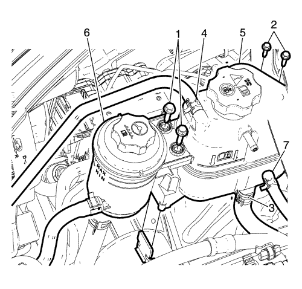
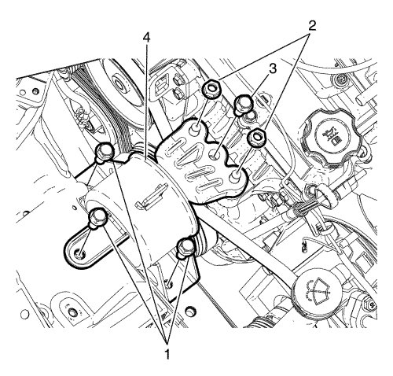

Sustitución del soporte del motor — con EN-50176
Herramientas especiales
| • | EN-48244 Soporte del conjunto del motor |
| • | EN-49802 Soporte de la base |
| • | EN-50177 Retención del apoyo del soporte |
Si desea informarse sobre herramientas regionales equivalentes, consultar Herramientas especiales .
Procedimiento de desmontaje
- Sostenga el motor utilizando herramientas especiales. Consultar
Soporte del motor/cambio : con CH-49289 y CH-49290 → con EN-49802 y EN-50176 .

Nota: NO desmonte los tubos flexibles de líquido de la dirección asistida y de refrigerante de los depósitos de líquido de la dirección asistida y compensación de refrigerante.
- Extraiga los pernos (1) del depósito del líquido de la dirección asistida, desenganche el depósito y apóyelo sobre el motor.
- Retire los tornillos (2).
- Recoloque y retenga el depósito de compensación de refrigerante (5) del montaje del motor para facilitar la extracción de este último.

- Quite las tuercas de la fijación del motor (2).
- Extraiga el perno (3) del montaje del motor.
- Extraiga los pernos de retención (1) que fijan el montaje del motor a la carrocería.
- Desmonte el soporte del motor (4).
Procedimiento de montaje
- Monte el soporte del motor (4).
Atención: Consulte Atención - fijaciones en la sección Prólogo
- Introduzca los pernos de retención del montaje del motor (1) de la carrocería y apriételos a 50 N·m (36 lib. pie).
- Introduzca el perno (3) y apriételo a 58 N·m (43 lib. pie).
- Introduzca las tuercas (2) y apriételas a 58 N·m (43 lib. pie).
- Monte el depósito de compensación de refrigerante (5).
- Apriete los pernos (2) a 9 N·m (80 lib. pulg.)..
- Enganche el depósito del líquido de la dirección asistida al depósito de compensación de refrigerante.
- Apriete el perno (1) a 9 N·m (80 lib. pulg.)..
- Retire las herramientas especiales. Consultar
Soporte del motor/cambio : con CH-49289 y CH-49290 → con EN-49802 y EN-50176 .
| © Copyright Chevrolet Europe. All rights reserved |